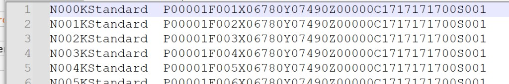
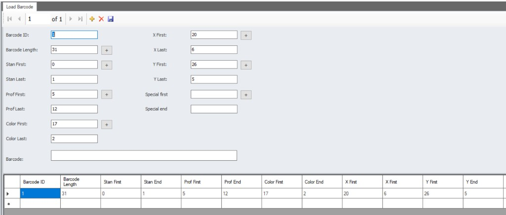

KD658 — Using Job Files
See the MWM barcode information page for TT / MSC input, recipe selection and operating methods. The indices below apply to the 31-character TT example with dimension factor 1; the screenshot shows a different installation example.
The KD658 barcode reader is used on the MWM HMI in two operating modes: with a work file and without a work file.
Working with a work file
On the automatic screen, direct list-number selection matches the entire scanned text (for example 001) to the loaded work file's list number. The N header in a work file is not automatically removed from a scan. Other operating methods may use a configured section of the barcode.

Example work file lines (batch_test_1.txt):
N000KStandard P00001F001X06780Y07490Z00000C1717171700S001
N001KStandard P00001F002X06780Y07490Z00000C1717171700S001
N002KStandard P00001F003X06780Y07490Z00000C1717171700S001
In this example, list numbers such as N000, N001, and N002 are used as the matching key when a barcode is scanned. The operator only needs to scan the 3 digits after N (e.g. 000, 001, or 002) to reach the production data on the corresponding line.
Work file line format (KD6xx)
Each line consists of fields separated by fixed header characters. Field definitions are based on KD6xx_BathcFile_Desc.xlsx:
| Character | Header | Size | Type | Description |
|---|---|---|---|---|
| N | List number | N + 3 characters | Numeric | Sequence number used for barcode matching |
| K | Profile code | K + 10 characters | Text | Profile definition (e.g. Standard, Profiles01) |
| P | BIN / Trolley number | P + 5 characters | Numeric | Pallet or trolley number |
| F | Window number | F + 3 characters | Numeric | Window sequence number |
| X | Frame X value | X + 5 characters | Numeric | The fifth character is the decimal place. E.g. 15005 = 1500.5 |
| Y | Frame Y value | Y + 5 characters | Numeric | The fifth character is the decimal place. E.g. 15005 = 1500.5 |
| Z | Unused | Z + 5 characters | Text | Reserved field |
| C | Operator information | C + 10 characters | Text | Additional information for the operator |
| S | Quantity | S + 3 characters | Numeric | Production quantity |
Example line (xlsx):
N000KProfiles01P00001F001X06780Y07490Z00000C1717171700S001
Work file example ----->>> batch_test_1.txt
Working without a work file
On the manual screen, barcode data is parsed directly from the scanned string. The required fields are configured on the MWM HMI Load Barcode screen. The active screen and operating mode determine the behavior, rather than file presence alone.

General settings
| Field | Value | Description |
|---|---|---|
| Barcode ID | 1 | Barcode definition identifier. When multiple barcode formats are defined, each is saved with a different ID. |
| Barcode Length | 31 | Total character length of the scanned barcode. Parsing is performed according to this length. |
| Barcode | — | Test input field for barcodes. A sample barcode can be entered here to verify the configured indices and lengths. |
Field parsing settings
Index values are 0-based (the first character of the barcode is index 0). The First field specifies the starting index of the data within the barcode; the Last / End field specifies the number of characters (digits) to read starting from the First value.
| Field | Value | Description |
|---|---|---|
| Stan First | 0 | Starting index of the standard character in the barcode. |
| Stan Last | 1 | Number of characters to read starting from Stan First. |
| Prof First | 5 | Starting index of the profile code in the barcode. |
| Prof Last | 12 | Number of characters to read starting from Prof First. |
| Color First | 17 | Starting index of the profile color code in the barcode. |
| Color Last | 2 | Number of characters to read starting from Color First. |
| X First | 19 | Starting index of the frame X-axis length in the barcode. |
| X Last | 6 | Number of characters to read starting from X First. |
| Y First | 25 | Starting index of the frame Y-axis length in the barcode. |
| Y Last | 6 | Number of characters to read starting from Y First. |
| Special first | — | Optional starting index for a custom field. Defined when additional data beyond the standard fields needs to be read. |
| Special end | — | Number of characters to read starting from Special first. Used together with Special first. |
Summary table
| Field | First | Last / End |
|---|---|---|
| Stan | 0 | 1 |
| Prof | 5 | 12 |
| Color | 17 | 2 |
| X | 19 | 6 |
| Y | 25 | 6 |
This includes the fixed zero after each TT dimension: 289400 / 100 = 2894.00 mm with dimension factor 1. Color contains both gasket and colour digits. Direct data input uses the manual screen; automatic operation selects a job-list row using the configured section or the entire scan. Direct list-number selection expects the list number itself (for example 001); it does not remove an N prefix automatically.
In work-file-less mode, the scanned 31-character barcode is parsed into Stan, Prof, Color, X, and Y fields according to the indices and lengths above. If Special first / Special end are defined, an additional custom field is read using the same logic.